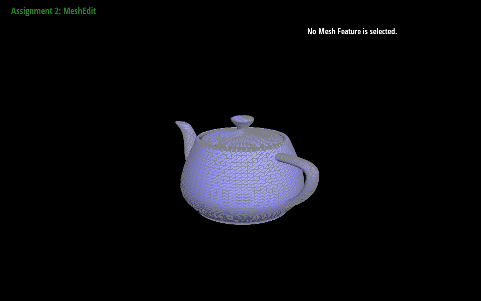
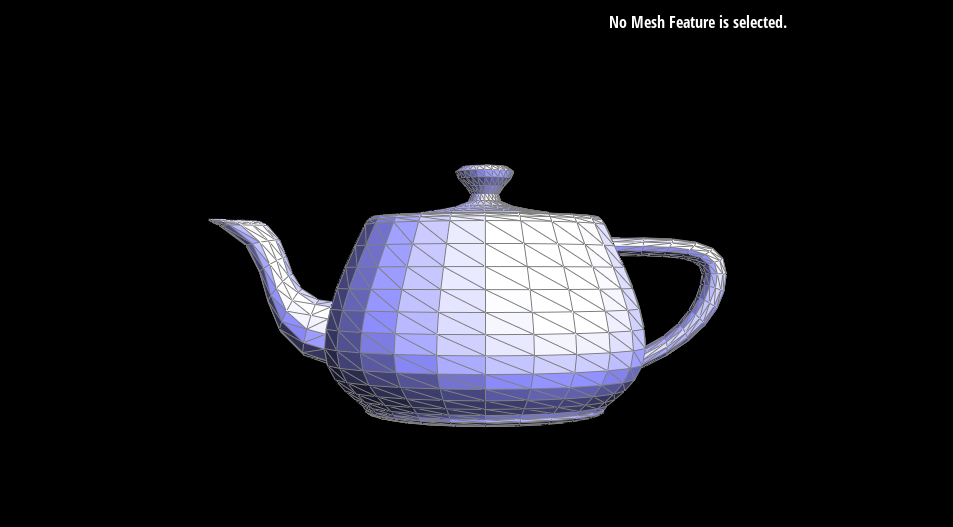
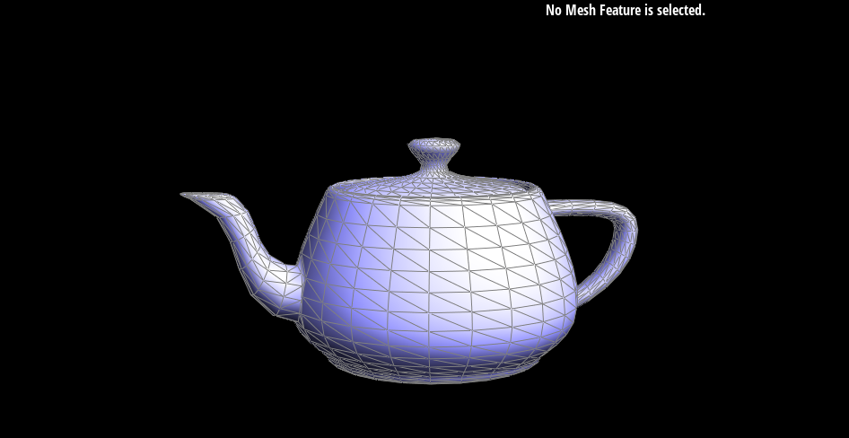
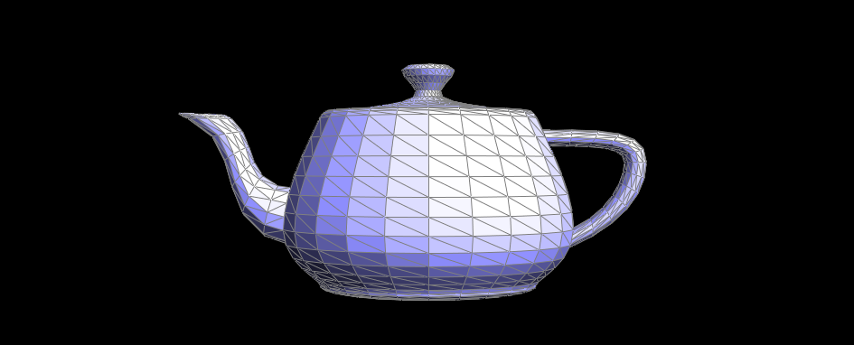
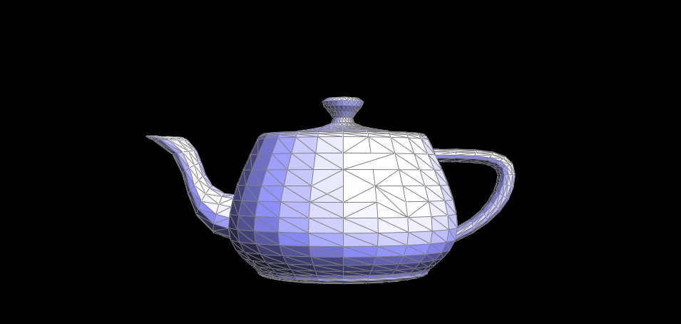
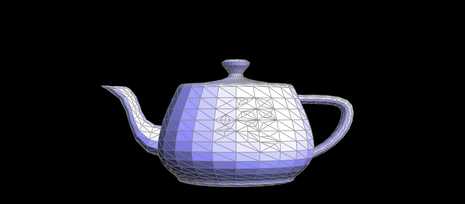
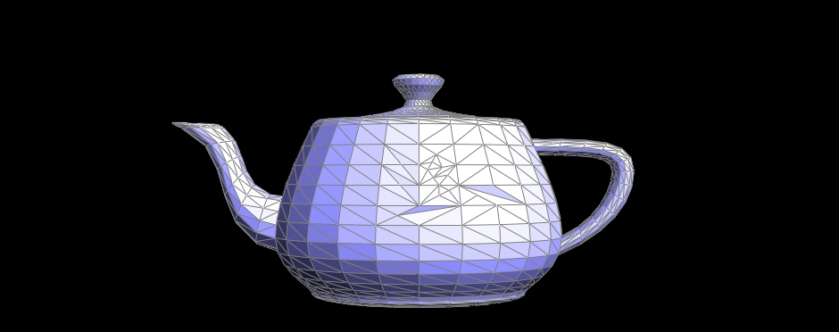
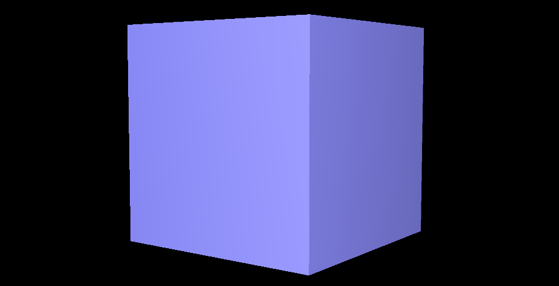

Working with Bezier curves was pretty interesting - implementing the de Casteljau algorithm made me really understand how these smooth curves are created recursively through
linear interpolations.
The half-edge data structure was definitely the trickiest part to wrap my head around. I spent a lot of time drawing diagrams to make sure I understood all the pointer
connections before implementing the edge flip and edge split operations. There were so many pointers to keep track of! I had a few bugs where my mesh would get weird holes
after multiple operations, but I finally figured out where I was missing some pointer updates.
The loop subdivision was really satisfying once I got it working. Seeing a blocky mesh transform into something smooth after just a few iterations was pretty cool
Section I: Bezier Curves and Surfaces
Part 1: Bezier curves with 1D de Casteljau subdivision
De Casteljau's algorithm is a recursive method for computing points on a Bezier curve using linear interpolation.
The algorithm works by repeatedly subdividing the control points until you reach a single point that lies on the curve.
I implemented it by creating a function that performs one step of this subdivision process.
For each pair of adjacent control points Pi and Pi+1 in the input vector, I calculated a new intermediate point using linear interpolation: Pi' = (1-t)Pi + tPi+1, where t is the
parameter value between 0 and 1.
Step 0
Step 1
Step 2
Step 3
Step 4
Step 5
Bezier curve with modified t
Part 2: Bezier surfaces with separable 1D de Casteljau
We extend the de Casteljau algorithm to Bezier surfaces by breaking the 2D evaluation into two 1D evaluations.
First, we evaluate each row of control points using the standard de Casteljau algorithm with parameter u to get intermediate points.
Then, we treat these intermediate points as control points for a Bezier curve in the v-direction and evaluate at v to get the final surface point.

Teapot
Section II: Triangle Meshes and Half-Edge Data Structure
Part 3: Area-weighted vertex normals
The code iterates over all half-edges around a vertex using the half-edge data structure.
For each face (ignoring boundary faces), it retrieves the three vertices, computes two edge vectors, and uses their cross product to get the face's normal weighted by its area.
It then sums all these weighted normals and finally normalizes the result to produce a unit normal vector that approximates the vertex's normal for smooth shading.

Shading without vertex normals

Average vertex normal shading
Part 4: Edge flip
I implemented the edge flip operation by changing how all the halfedges connect to each other. Basically, I took two triangles that share an edge and flipped that edge to connect
the other two vertices instead.
The trickiest part was figuring out how to reconnect everything after getting all edges, halfedges and vertices.
I decided to rename the halfedges to keep track of what was going where after the flip. So for example, the halfedge that went from c to b before the flip
would become the one going from d to a after. On my first try I didn't use setNeighbors() enough. After drawing potential flips on the paper and using setNeighbors() for every edge
my implementation was working correctly.

Before the flip

After the flip
Part 5: Edge split
For my edge split implementation, I first mapped out all the halfedges, vertices and faces that needed to be created or modified.
The trickiest part was making sure all the pointers were set correctly - especially the twin relationships between halfedges.
I found it really helpful to draw everything out on paper before coding. During debugging, I kept running into issues where some halfedges weren't properly connected,
causing weird behavior when testing with multiple splits. Eventually I solved this by carefully checking each halfedge cycle and making sure vertex pointers were correctly updated
Before the split

After splits

Combination of splits and flips
Part 6: Loop subdivision for mesh upsampling
In my Loop subdivision implementation, I followed the key steps of the algorithm: computing new positions for existing vertices,
calculating positions for new edge midpoints, splitting all original edges, and then flipping appropriate edges.
The trickiest part was correctly identifying which edges to flip. My original implementation simply checked if an edge connected a new vertex to an old one,
but this caused problems during multiple subdivision iterations because it was flipping edges that should remain unflipped.
I discovered that when you split an edge between vertices A and B, creating a new vertex M, the edges A-M and M-B should never be flipped even though they
connect new and old vertices.
To fix this, I improved my edge flipping logic to identify edges that connect new vertices to old vertices that weren't endpoints of the original split edge.
When observing Loop subdivision effects, I noticed that sharp corners and edges become progressively rounder with each iteration.
This smoothing happens because vertex positions are updated based on weighted averages with neighboring vertices.
I found that pre-splitting edges along sharp features before subdivision helped preserve these details better.

Cube before loop subdivision
Step 1
Step 2
Step 3
Step 6
I observed that the cube is becoming asymmetric after repeated subdivisions because the initial triangulation of cube faces wasn't uniform.
By preprocessing the cube with edge splits to create a more balanced initial triangulation pattern, I was able to make it subdivide more symmetrically.
This works because the subdivision process preserves patterns established in the base mesh.